★ PICKLE IS BACK! ORDER YOUR LONG BOI NOW ★
Made by Marzia
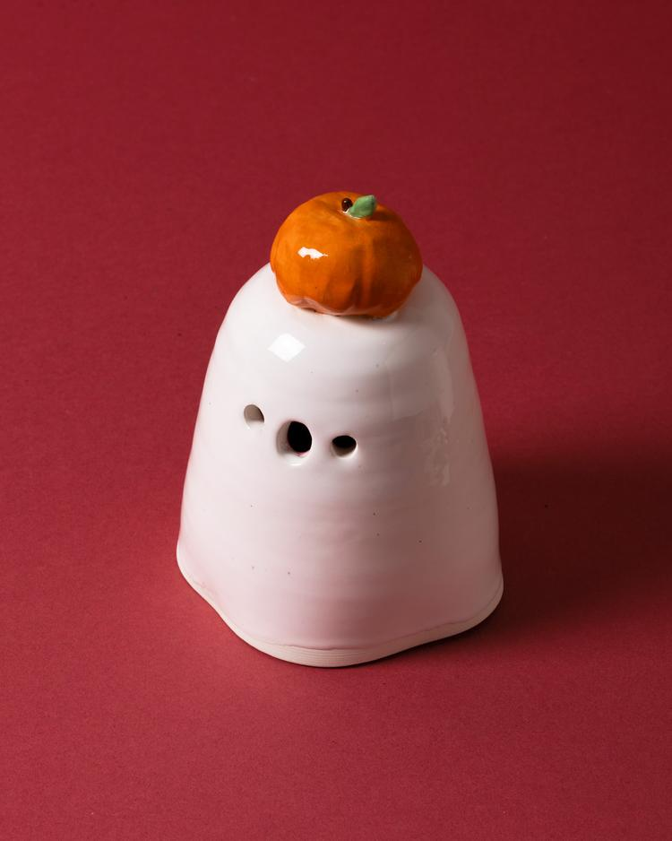
Made by Marzia Ceramic Ghost with Pumpkin Hat
from $80.00
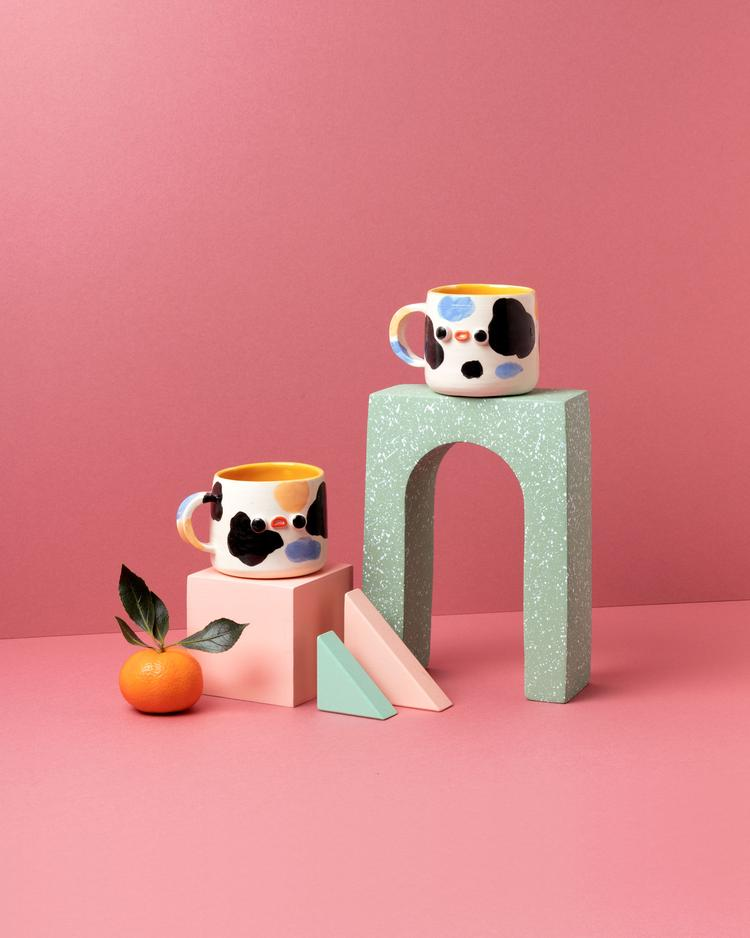
Made by Marzia Ceramic Ghost with Witch Hat
$90.00
Made by Marzia Tazza
$80.00
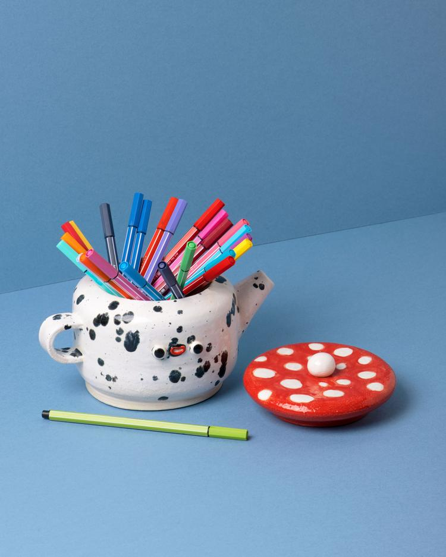
Made by Marzia Fungo Teapot Speckled Interior
$125.00
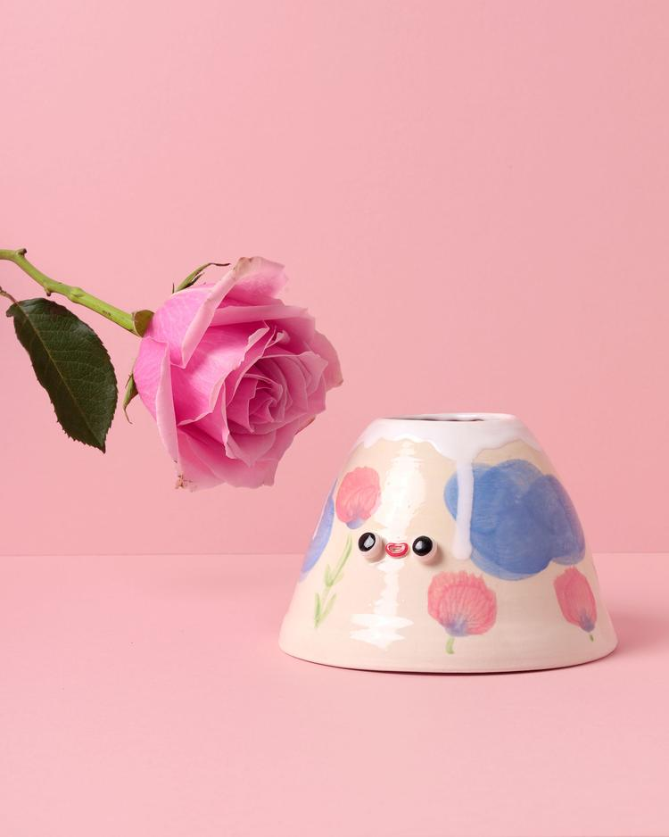
Made by Marzia Yama-san Floral
$95.00
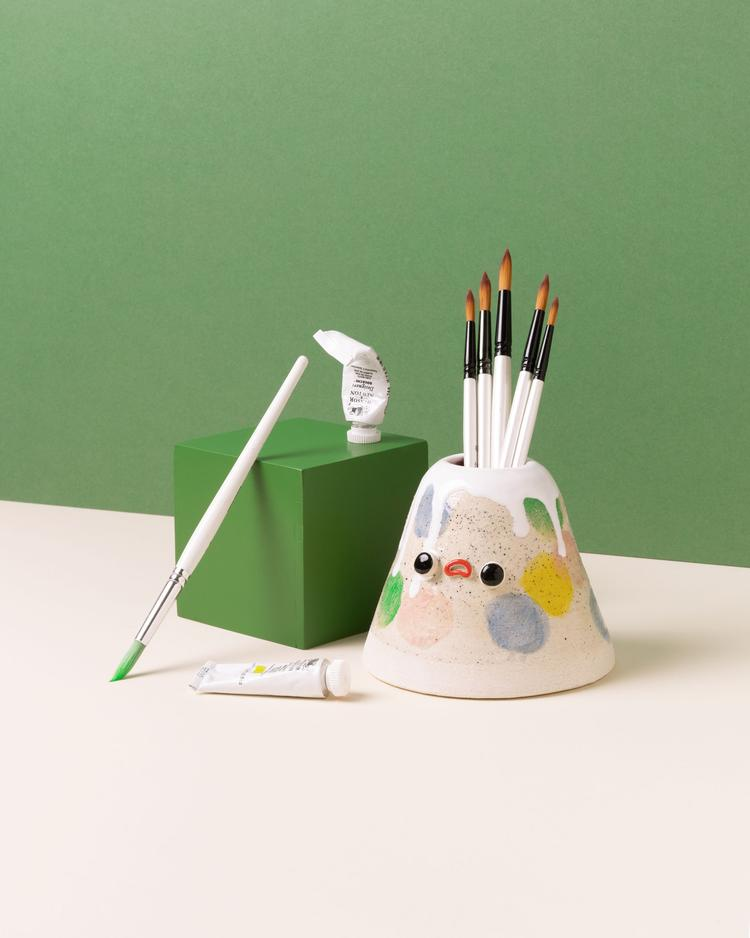
Made by Marzia Yama-san Pastel Spotted
$95.00
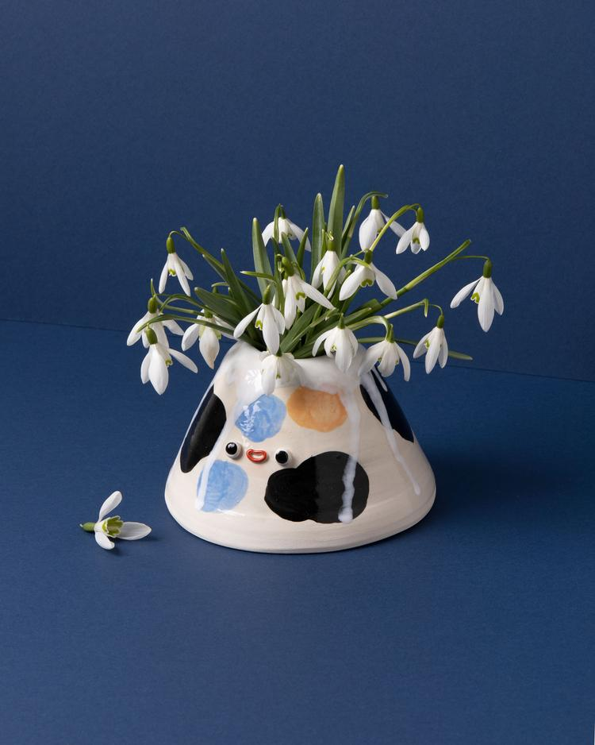
Made by Marzia Yama-san Black Spots
$95.00
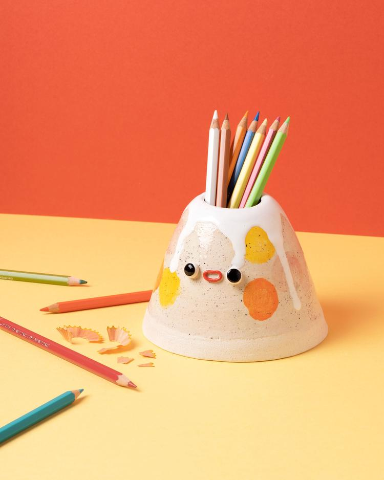
Made by Marzia Yama-san Yellow Spots
from $75.00
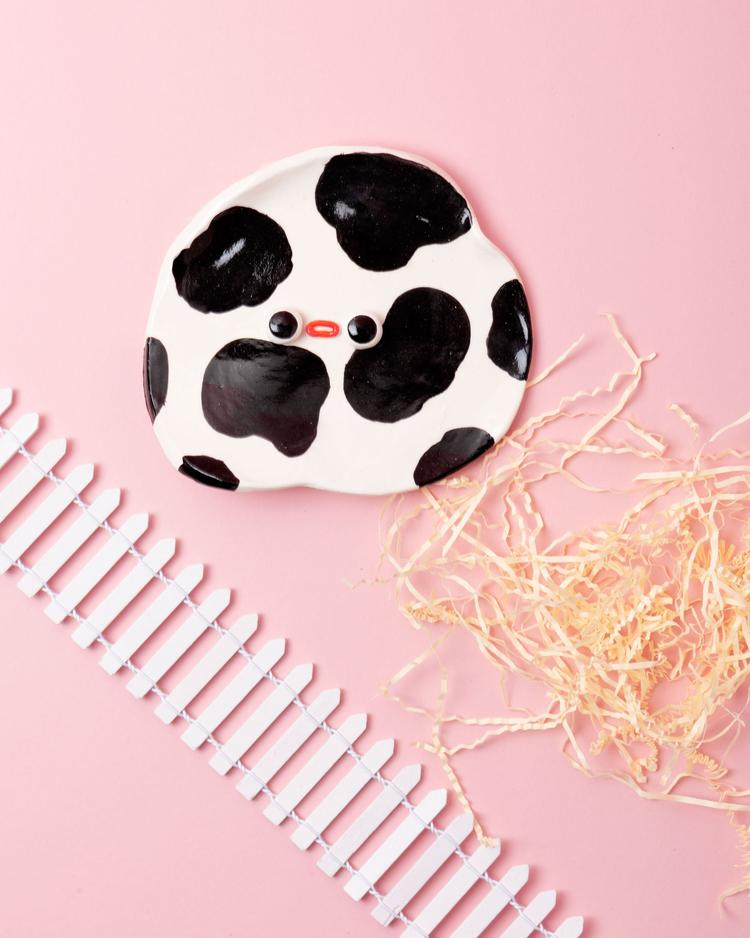
Made by Marzia Rotto Dishes
$55.00
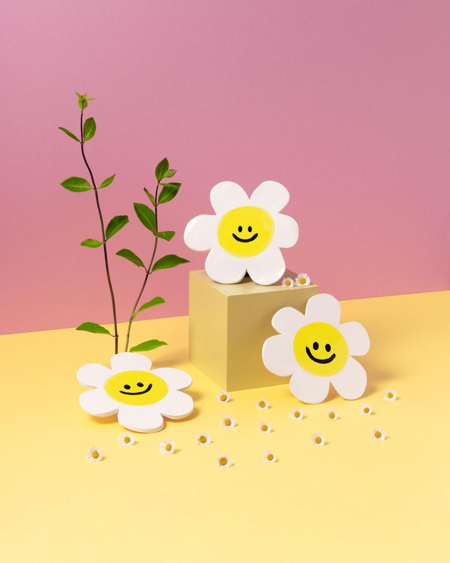
Made by Marzia Fiore Coasters
$55.00
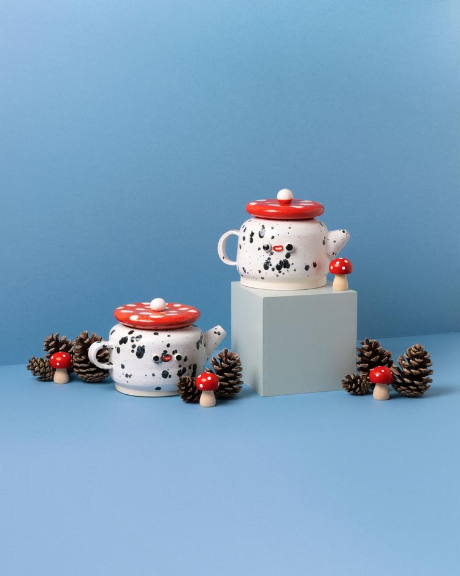
Made by Marzia Fungo Teapot Pink Interior
$125.00
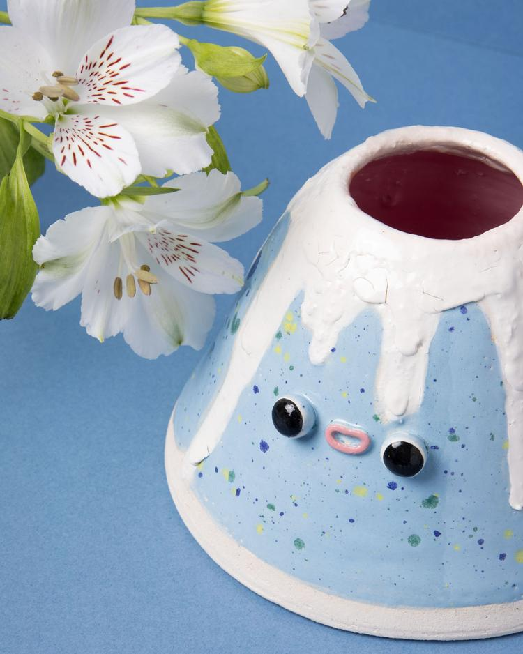
Made by Marzia Yama-san Misfit
$75.00